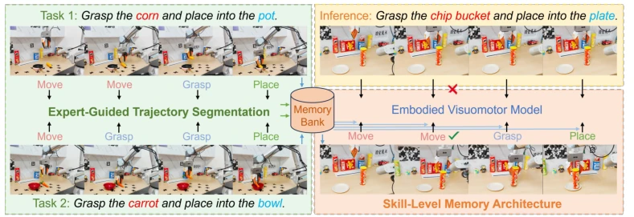
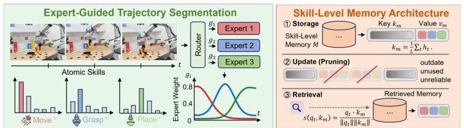
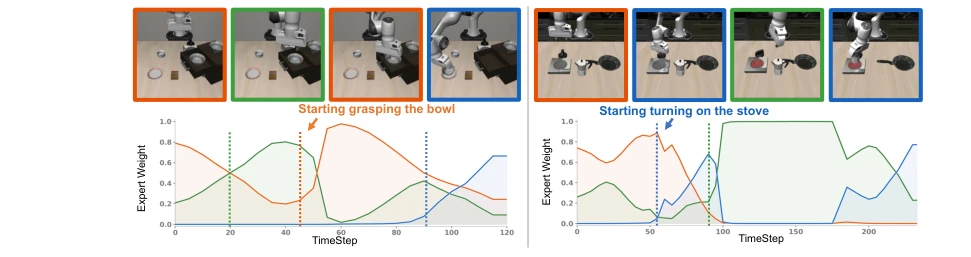
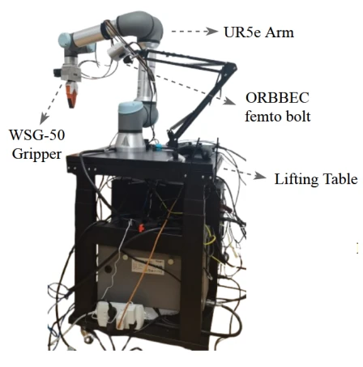
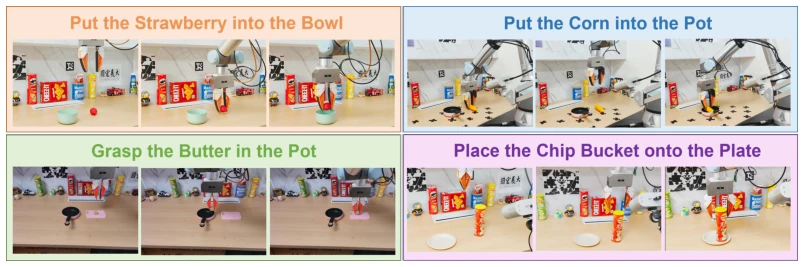

SkillMemo provides a "cheat code" for VLA and DP models that merely "rote memorize" entire trajectories, attempting to solve generalization difficulties using a memory library. This approach is quite on the right track; after all, robots do not possess hippocampi like humans, and relying solely on large models to hard-memorize all combinations is indeed prone to "blackouts" in OOD scenarios. The authors use MoE to implicitly segment skills and store them in the memory library; this operation is much smarter than simply piling up data, successfully outperforming large models like π0.5 on both LIBERO and real UR5e. However, what if this implicit segmentation relying on "expert guidance" fails if the expert (MoE) segments incorrectly? Moreover, although the memory library update strategy simulates forgetting, will it mistakenly delete "niche but critical" skills in long-tail tasks? After all, robots are not humans; having memory that is too good or too bad is prone to failure. Overall, this implements "skill reuse" from concept to engineering, but the interpretability black box problem brought by "implicit" methods remains a hidden danger that keeps one awake.
Existing embodied vision-language-action models (such as Diffusion Policy [1] and VLA models [8]) perform well after large-scale pre-training, but the core pain point lies in the lack of large-scale embodied trajectory data, leading to an inability to effectively perform compositional generalization when facing out-of-distribution (OOD) scenarios. These models typically treat long trajectories as a single whole, lacking the ability to capture reusable skill structures. When encountering unseen object combinations or task configurations, they often perform poorly. Although existing research attempts to introduce memory mechanisms, such as MemoryVLA [18] storing visual semantic summaries, or HAMLET [19] encoding interaction history, they lack explicit memory mechanisms for fine-grained skill features at the behavioral level. This leads to models being unable to efficiently reuse prior experience, making it difficult to solve problems by combining known skills in unseen tasks. Therefore, there is an urgent need for a framework capable of implicitly decomposing skills and structurally storing and retrieving them to break through the generalization bottleneck caused by data scarcity.

Figure 1: Unlike conventional models that struggle to capture reusable skill structures, our method implicitly decomposes trajectories into latent atomic primitives for memory storage, which are dy- namically retrieved and fused to facilitate compositional generalization to unseen task configurations.
The core of the SkillMemo framework lies in implicitly decomposing long trajectories into atomic skills and achieving compositional generalization through a dynamic memory library. The overall process is divided into two stages: training and inference. During training, first through the Expert-Guided Trajectory Segmentation module (EGTS), utilizing a Mixture of Experts (MoE) architecture to implicitly segment trajectories. The gating network in MoE dynamically allocates expert weights based on intermediate features, thereby dividing the trajectory into multiple non-overlapping skill segments, each representing an atomic skill. To encourage complementarity among experts, the authors introduce a synergistic information loss based on Partial Information Decomposition (PID). Subsequently, the Skill-Level Memory Architecture (SLMA) stores these skill segments as key-value pairs: Key is the aggregated feature vector of the skill segment, Value is the gating weight sequence corresponding to that segment. During inference, the model calculates similarity based on current observations, retrieves the most relevant Top-N skills from the memory library, and fuses the retrieved gating distribution with the current predicted gating distribution, thereby providing context priors for action prediction. Additionally, to adapt to lifelong learning, the framework also designs a dynamic update mechanism, pruning the memory library based on usage time, retrieval frequency, and reliability thresholds, ensuring that high-value skills are stored.

Figure 2: Overview of the SkillMemo framework. The Expert-Guided Trajectory Segmentation module implicitly∗extracts latent atomic skills from demonstrations via MoE routing. The Skill- Level Memory Architecture structurally stores and dynamically prunes these learned gating profiles, enabling context-aware retrieval for robust compositional generalization on unseen task.

Figure 3: Visualization of expert activation weights over time. The gating coefficients dynamically shift and exhibit pronounced peaks during critical action phases such as grasping a bowl or turning on a stove, demonstrating that the EGTS module successfully drives individual experts to implicitly specialize in distinct, semantically meaningful motion primitives.
The authors conducted extensive evaluations on simulation benchmarks such as LIBERO, Push-T, BlockPush, and Franka Kitchen, as well as on the real UR5e robotic arm. Baselines include Diffusion Policy [1], MemoryVLA [18], and π0.5 [7], etc. In simulation environments, SkillMemo achieved SOTA performance on both DP and VLA backbones, for example on the LIBERO benchmark, π0.5-SkillMemo average success rate reached 98.0%, 1.2% higher than π0.5. In zero-shot compositional generalization tests, models trained on a single subset (e.g., Goal) performed even better than in-distribution trained baselines on unseen subsets (e.g., Spatial), proving the effectiveness of skill reuse. In real-world experiments, SkillMemo significantly outperformed DP on tasks such as strawberry into bowl, lemon on plate, and improved success rate by over 10% on unseen object-container combinations (e.g., strawberry on plate). Ablation studies show that both EGTS and SLMA modules contribute significantly to performance improvement, and the effect is best when the number of experts N=5.

Figure 4: Hardware setup for real-world experiments, featuring a UR5e manipulator, WSG-50 gripper, ORBBEC Femto Bolt camera, and a mobile lifting table.

Figure 5: Visualization of successful rollouts for real-world manipulation tasks using the SkillMemo framework. The continuous frames illustrate the UR5e robot effectively executing diverse compo- sitional tasks, demonstrating accurate skill retrieval, robust grasping, and precise placement across different object-receptacle combinations.